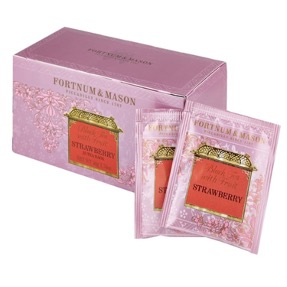

센스쟁이 망고
척하면 척이지!
유연하고 말랑한 생각이 매력적인 당신!
예민한 만큼 스트레스도 많고 속은 누구보다 시끄럽지만
그만큼 배려도 잘하고 눈치도 빨라요.
기분이 좋지 않을 때 마시면 기분 좋아질 수 있도록
센스만점 톡톡 튀는 당신에게 딱 맞는 차를 추천해드릴게요!
추천 차
Fortnum & Mason - Strawberry
(teabags, caffeine)
인공적이지 않은 새콤달콤한 향을 가진 딸기와 블렌딩된 홍차예요.
대담한 맛의 홍차와 딸기 과육의 조각으로
묵직함과 상큼함 모두 가진 당신에게 추천할게요!